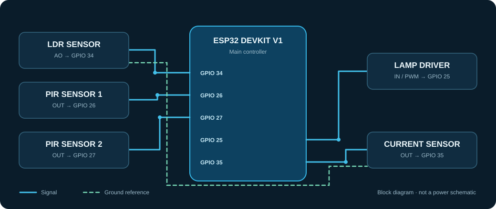

Intensitas cahaya
38%Sensor LDR
DURENAN ROBOTIC SQUAD / PROJECT
Sistem penerangan jalan otomatis berbasis cahaya dan gerakan.
Sensor LDR
Sensor PIR
Output PWM
Sensor arus
Mode otomatis menyesuaikan lampu berdasarkan kondisi sekitar.
Diagram koneksi dan pemetaan pin perangkat.

| Komponen | Pin komponen | ESP32 | Fungsi |
|---|---|---|---|
| LDR | AO | GPIO 34 | Pembacaan cahaya |
| PIR 1 | OUT | GPIO 26 | Deteksi area A |
| PIR 2 | OUT | GPIO 27 | Deteksi area B |
| Driver lampu | IN / PWM | GPIO 25 | Kontrol brightness |
| Sensor arus | OUT | GPIO 35 | Monitoring arus |
GPIO 25 mengendalikan input driver, bukan beban lampu secara langsung. Pastikan level tegangan sensor sesuai dengan ESP32 dan gunakan catu daya serta driver yang sesuai untuk lampu.